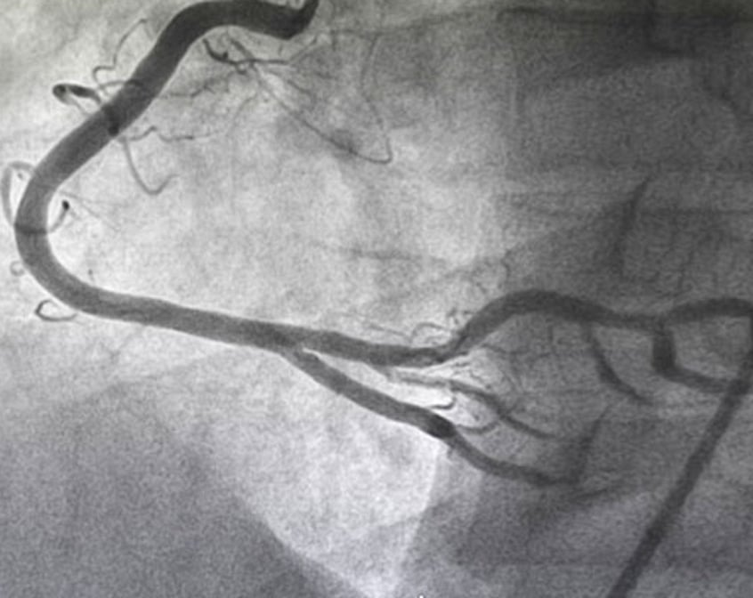
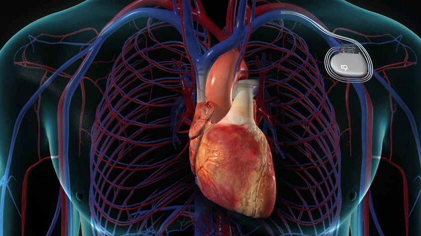
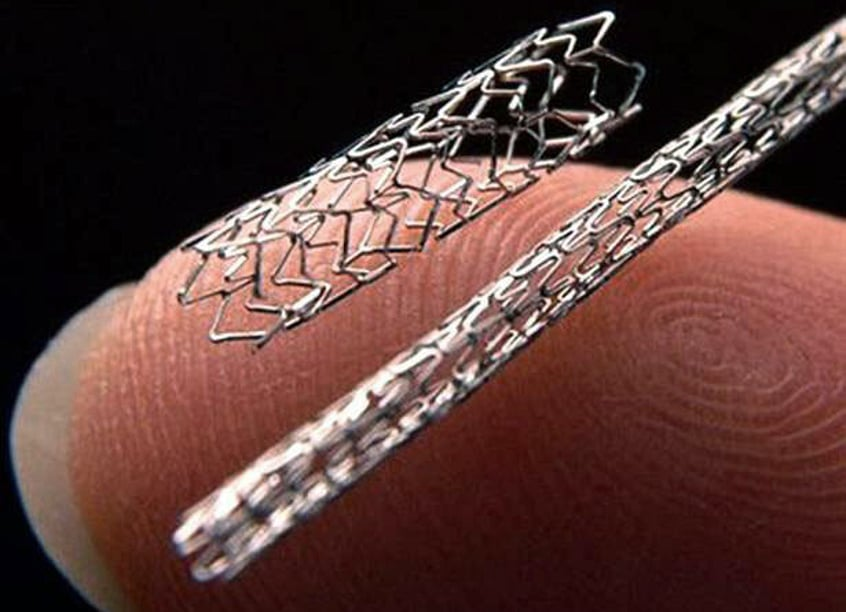
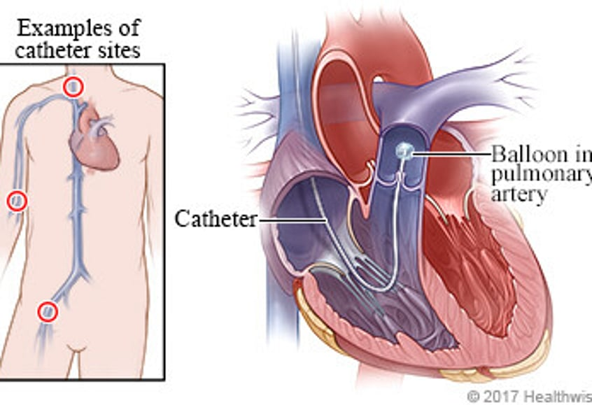
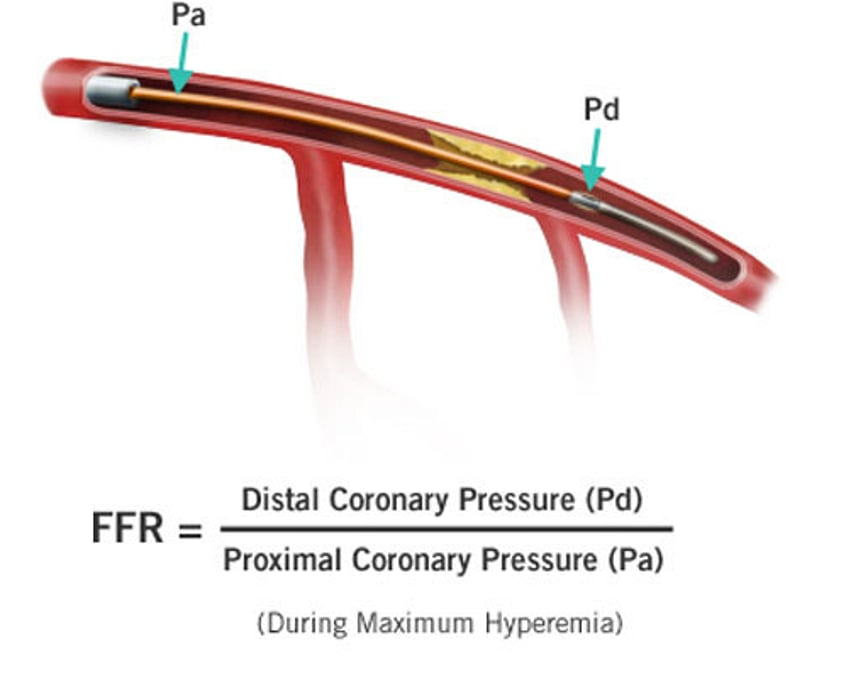
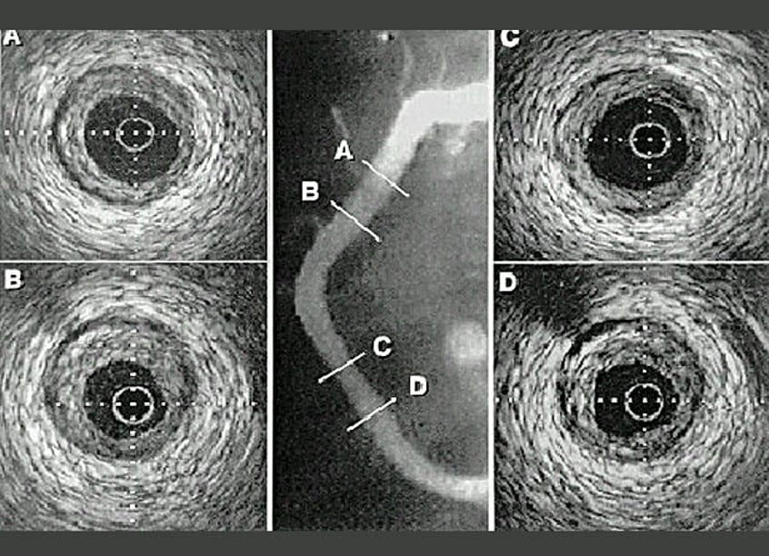
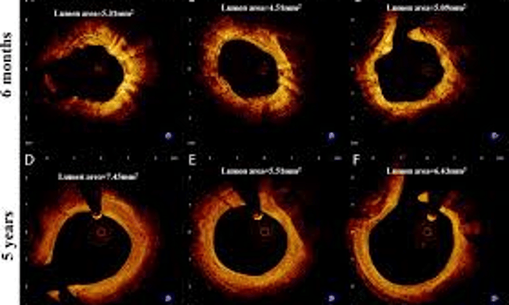

This is a special x-ray test to actually take pictures of the arteries of the heart. It is a very safe test and is performed under local anaesthetic. A tiny tube is passed to the heart via an artery in either the leg or wrist and moving x-ray pictures recorded as a special dye is injected into the arteries. This gives us a road map of the arteries and shows up any blockages or narrowings. During this test the valves, pumping function and oxygen levels in the heart can also be assessed.
Remember this is an investigation not a treatment, which is why it is much cheaper than angioplasty and stent insertion.
Download consent form (PDF)
If your doctor has suggested that you have a pacemaker fitted, it is because you have an abnormality in the electrical conduction system of your heart. Please download our full information sheet taking you through the whole process.
Pacemaker information sheet (PDF)
This is a treatment for narrowed heart arteries, which cause angina. It is performed in the same way as an angiogram from the leg or wrist, avoiding the need for open-heart surgery. A tiny balloon is used to stretch open the narrowed or blocked artery and following this a metal coil (stent) is stretched open and left behind in the artery to provide a scaffold to reduce the chance of the artery re-narrowing.

This is used to gain information about your valves and lungs. Information is obtained by passing a small catheter through the vein in your arm into the right side of your heart and lungs. This investigation provides additional information often required when assessing heart valve disease and increased pressures in the lungs.

If a narrowing is identified in a coronary artery it is not always clear if it is important and needs fixing or not. FFR uses a fine wire to measure the change in pressure either side of the narrowing to determine whether or not a stent should be placed. In order to measure the pressure accurately you will be given a drug called adenosine. For this reason you will be advised not to drink tea or coffee on the morning of the procedure as caffeine interferes with adenosine.

This is a small ultrasound probe that actually passes down a coronary artery giving detailed information of the shape, size and amount of disease within the artery. It is used to decide if a stent is well placed or required. It can help determine if bypass surgery is needed.

This is similar to IVUS but uses light instead of ultrasound to achieve its images. It is a new technique which is being increasingly used as its pictures are far more detailed than those achieved with IVUS. As with IVUS it provides information regarding shape and size of arteries but also amount and type of fat build up.
Questions about a procedure?
For all referral information and clinical concerns please email us — we will contact you when our cardiologists have reviewed your referral.